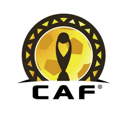

|



Le Mouloudia Club, souvent appelé simplement "Mouloudia," est un club de football très populaire en Algérie, avec une riche histoire qui remonte à plusieurs décennies. Le club a été fondé dans la première moitié du 20ème siècle, souvent dans un contexte de lutte pour l'indépendance nationale. Le nom "Mouloudia" est fréquemment associé à des valeurs de patriotisme et de solidarité, car ces clubs ont souvent été créés pour offrir une alternative culturelle et sportive aux jeunes Algériens sous le régime colonial. Le Mouloudia Club d'Alger (MCA), par exemple, est l'un des clubs les plus titrés du pays, avec de nombreuses victoires en championnat national, en coupe, et sur la scène internationale. Le MCA est connu pour ses supporters passionnés, qui sont parmi les plus fidèles en Algérie. Le club a également un fort impact social et culturel, souvent considéré comme un symbole de la résilience et de l'identité algérienne.
Le titre de champion d'Afrique est décerné à l'équipe qui triomphe lors de la Coupe d'Afrique des Nations (CAN), la plus prestigieuse compétition de football en Afrique. Organisée par la Confédération Africaine de Football (CAF), cette compétition rassemble les meilleures équipes nationales du continent et se déroule tous les deux ans. La CAN est un événement sportif majeur, suivi avec passion par des millions de supporters à travers l'Afrique et le monde. Elle incarne non seulement la fierté nationale, mais aussi un moment de communion pour les différentes nations africaines.
This project was realised by Mohamed Hanou - All rights reserved - 2024